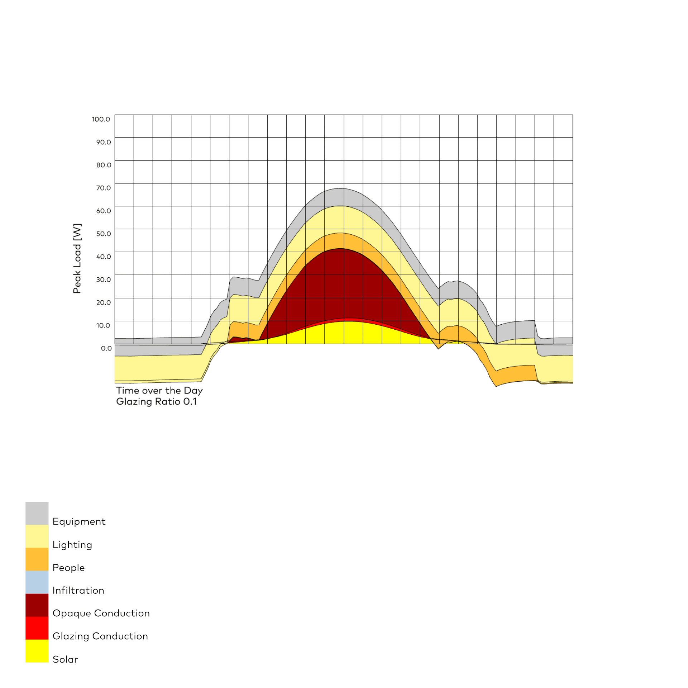
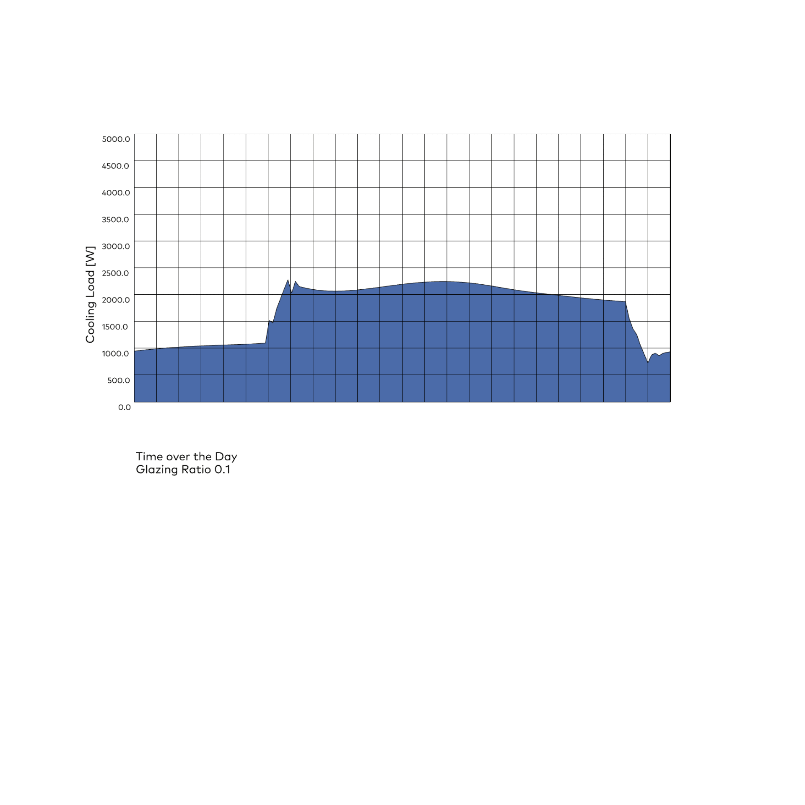
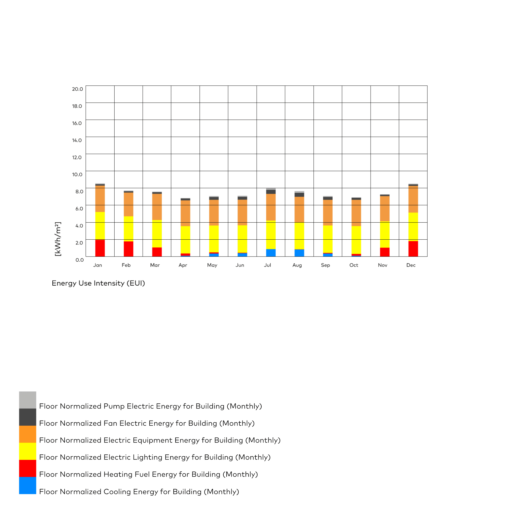

HLK-Anlagen-Dimensionierung
Honeybee
⬤ Honeybee berechnet Heiz-/Kühlspitzen und stündliche Bedarfe für HLK-Dimensionierung – Design-Tage (99. Perzentil) inklusive Hülle, Quellen, Lüftung, Lasten. Quantifiziert Verschattung, Masse, natürliche Lüftung auf Systemgröße/Kosten. Vermeidet Überdimensionierung dynamisch – optimiert HVAC-Effizienz (COP) und Lebenszykluskosten präzise.
⬤ Honeybee calculates heating/cooling peaks and hourly demands for HVAC sizing – Design days (99th percentile) including envelope, sources, ventilation, loads. Quantifies Shading, mass, natural ventilation on system size/cost. Avoids oversizing dynamically – optimizes HVAC efficiency (COP) and life cycle costs precisely.